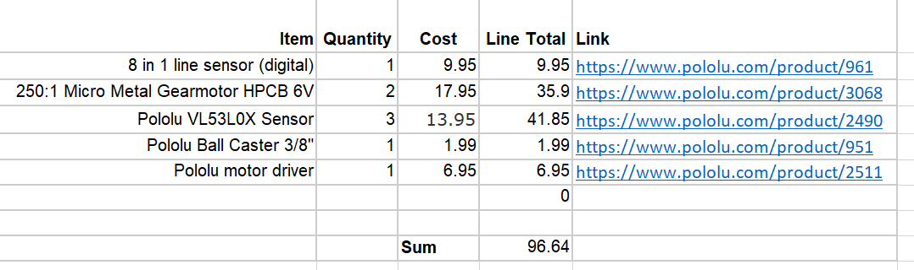
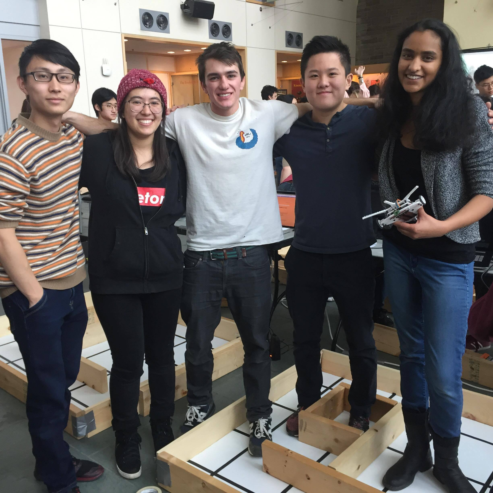

COMPETITION DAY!
Introduction
For this class, our goal was to build a maze-mapping robot that would traverse a randomly designed maze. The robot would detect walls and "treasures" of varying frequencies, then send that information to be displayed on a remote computer. Upon travelling to every part of the maze that is reachable, the robot would stop and play a tune to signal that it is finished.
Our robot Shrimpy did most of these things, to varying levels of success. Though the algorithm for mapping wasn't the MOST efficient, Shrimpy completed the mazes and played the "done" tune. The robot did update our display, buggy as it may be. The biggest problem was with the treasure detection, in that it didn't work and we removed it entirely.
Final Design
We went through multiple iterations of Shrimpy, until we arrived at the glorious Shrimpbot9001, pictured below.
Physical design
As you can see in the images, the design of our robot is based off a shrimp. This award-winning design features a sleek 3D-printed body with spaces for components and boards built in. Thus, we didn't need to make a board tower like many of the other groups did.
Wiring and components
The basic circuitry did not change significantly since milestone 4.
The bill of materials is shown below
Software
The main changes we made since milestone 4 were to fix some bugs in our DFS algorithm and to make the communication between the radio receiver and the FPGA more reliable.
Maze Mapping
After continued testing of the robot mapping several edge cases for the mazes, we made a minor improvement to our DFS algorithm. Previously, we only added nodes not currently in the frontier to the frontier. This sometimes resulted in the robot trying to retrace its path to an adjacent node. We solved this by adding all adjacent nodes (with no walls in between) to our frontier stack. Instead, when we popped from the frontier stack, we just checked the visited stack to see if we had already visited the node to avoid duplication.
We also found some minor bugs in our implementation after testing. One bug occured when retracing a path. If a node was added to a frontier previously and it was adjacent to our current location, our robot tried to move directly from our current position to the frontier node even if there was a wall in between. This was fixed simply by checking if there was a wall in between our current node and destination node before trying to move there. If there was, the robot would just try to retrace its path.
Radio and FPGA communication
We made signifcant changes to the way we sent the radio packets. Each radio packet only contained new information (current position, walls, treasures, and a done signal). The size of each packet was an integer. The packet was created through bit masking on the robot side, and similarly interpreted on the radio receiver.
We also improved our sending of radio packets. Previously, we found that occasionally radio packets were dropped. In order to improve accuracy, we re-sent radio packets if they were not received (this was determined through auto ACK). However, to avoid the possibility of getting caught in an infinite loop, we only resent packets at most ten times.
Another improvement we made from milestone 4 was in the communication between the radio receiver and the FPGA. After interpreting a packet and writing the appropriate pins on the arduino (we used parallel communication between the arduino and the FPGA), we set a dedicated valid bit to indicate that the packet was accurate. The FPGA would only change the state of the GUI based if the valid bit was high. This would avoid the chance that the FPGA might read a partial packet and change the state of the GUI.
Below are videos of Shrimpbot9001 running through mazes on competition day:
Conclusion
As mentioned before, we struggled with treasure detection, and eventually decided to not include it in the final competition. If we had more time, that is definitely one of the things we would like to improve.
Additionally, it would be nice to make our maze-searching algorithm more efficient, such as by implmeneting Djikstra's instead of DFS. This would have been especially nice in the final maze, where we had to retrace many extra steps, when the robot could have mapped the one outlier square sooner and finished much earlier.
Thanks for a gr8 year!
We'd like to thank Kirstin for running this class, as well as our lab TA's AJ and Ryan for their help and enthusiasm
